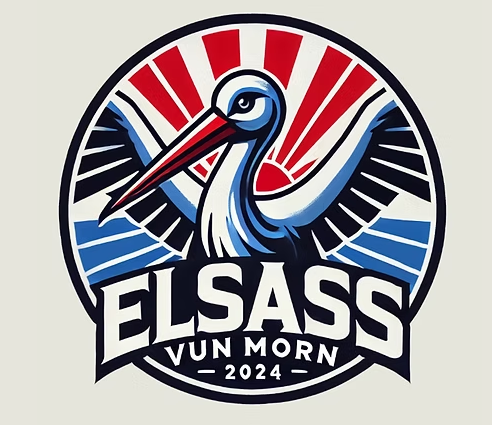

"Elsass vun morn" qui se traduit en français par "L'Alsace de demain" est un parti politique dont la création date du 24/10/2024, par quatre lycéens du lycée Stanislas à Wissembourg, soit FRIEDMANN Laurent, CLAD Corentin, WEBER Jules et un quatrième membre qui préfère rester dans l'anonymat. Et plus tard un deux autres membres nous on rejoins : LIGNIER Ludovic & PHILLIPS Maylis.
Elsass vun morn est un groupe politique engagé en grande partie pour l’avenir de l’Alsace mais nous ferons tout notre possible pour aussi aider la France. Notre objectif est de promouvoir la participation citoyenne, défendre les valeurs démocratiques et œuvrer pour un avenir prospère pour tous les habitants de la région. En soutenant des politiques progressistes et inclusives, nous visons à construire une société plus juste et équitable pour les générations futures. Et le plus important c'est qu'on sera toujours honnete et transparent avec vous.